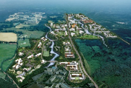
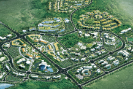

国際自由都市の概要
- Home
- 一般現況
- 行政・経済
- 国際自由都市の概要
済州国際自由都市
国際自由都市とは？
「国際自由都市」とは、人・商品・資本の国際的な移動や企業活動の便宜が最大限保障されるよう、規制の緩和及び国際的な基準が適用される地域のことをいう。
- 済州特別自治道の設置及び国際自由都市の造成のための特別法 第2条（定義）
済州は韓国、中国、台湾、香港、ロシア及び日本など東アジアの主要都市と隣接した地政学的な位置、きれいな自然と美しい自然景観を基盤にした優秀な観光産業インフラ、本土から離れているため特別法の適用が容易な条件を保有していることから、韓国の国際自由都市モデルの実現における最適地と評価されました。そこで韓国中央政府は1998年国際自由都市の推進方針を表明し、2002年、済州を国際自由都市に指定しました。
済州国際自由都市は人、商品、資本の移動の自由や企業活動の便宜を最大限保障する開放化、自由化政策のモデル地域として開発することで国家競争力を確保しようという国家発展戦略の要衝であり、21世紀北東アジアの中心都市として育成・発展するための済州のマスタープランです。
沿革
-
2017
- 3月 - 「済州国際自由都市第2次総合計画修正計画」告示
-
2012
- 4月 - ヘルスケアタウンの着工
- 1月 - 「済州国際自由都市第2次総合計画」確定告示
-
2010
- 3月 - 済州先端科学技術団地の竣工
-
2009
- 6月 - 英語教育都市の着工
-
2007
- 12月 - 神話歴史公園の着工
-
2003
- 2月 - 「済州国際自由都市総合計画」告示
-
2002
- 5月 - 中央政府が済州国際自由都市の造成を支援するための担当機構として国土交通部傘下に済州国際自由都市開発センター（JDC）を設立
- 4月 - 「済州国際自由都市特別法」施行令の改正及び施行で国際自由都市の法的基盤を構築
- 1月 - 「済州島開発特別法」を「済州国際自由都市特別法」に全面改正及び公布、2002.4
-
1999
- 9月 - 「99年9月から2000年6月まで建設交通部の主管で、済州国際自由都市妥当性調査の研究役務をアメリカのジョーンズ ラング ラサール社が実施
-
1998
- 9月 - 金大中大統領が済州訪問の際に、済州を観光、先端知識産業、物流、金融など複合機能の都市開発を通じて済州の特性と潜在力を活かし、特色ある形で開発する国際自由都市にする方針を表明
主要制度
| 「人」の自由な移動 | 「商品」の自由な移動 | 「資本」の自由な移動 |
|---|---|---|
| 無査証(No-Visa)政策、外国人労働者の長期在留の許容、 出入国手続きの簡素化など | 輸入自由化、無関税(No-Tax)など 貿易障壁の緩和 | 為替取引の自由化など |
主要プロジェクト
観光、教育、医療、第1次産業、先端知識産業などを済州の未来中核産業に育成するための基盤づくり及び投資誘致プロジェクト-

 済州先端科学技術団地
済州先端科学技術団地
-

 済州英語教育都市
済州英語教育都市
-
 神話歴史公園
神話歴史公園
-

 ヘルスケアタウン
ヘルスケアタウン